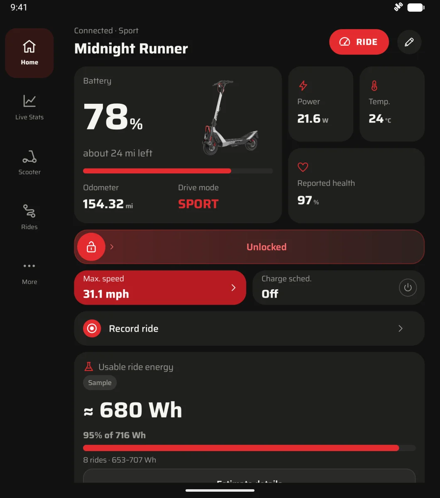
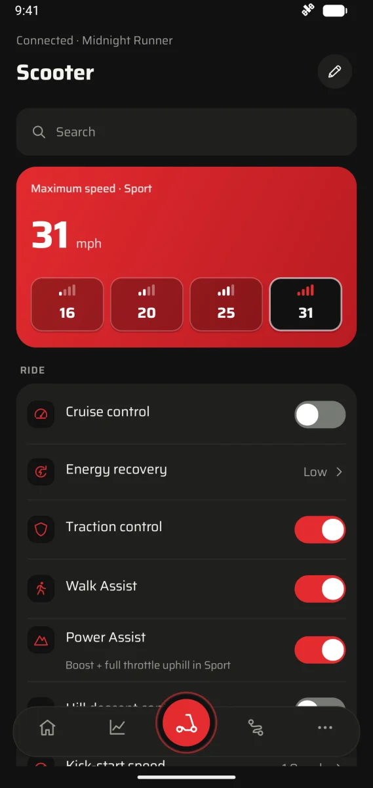
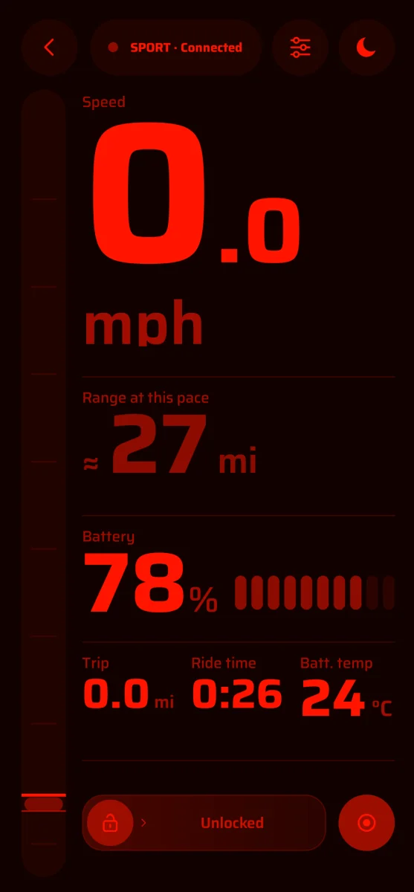

Your scooter, no cloud.
Volt is an independent, open source Android app for NAVEE electric scooters. Lock and unlock, change settings, read live data, ride in full screen and record rides, straight over Bluetooth. No account, and it works offline.
Volt @VERSION@ · Android 8.0+ · Free · No account
- Trip
- 0.0mi
- Ride time
- 0:03
- Batt. temp
- 24°C
Lock, ride, record, charge.
This is Volt's Home screen, rebuilt with sample data: the widgets you see first, in the order they come.
- Battery Level, range left and readings. Range is learned from your own rides, and estimates say so.
- Lock bar Slide to lock or unlock; Volt shows the change once the scooter confirms it.
- Readings Power, temperatures, health and trip stats, with charts and history in Live Stats.
- Setting tiles Top speed, cruise control, energy recovery, lights and more, for the controls your model supports. Experimental ones are marked LAB.
- Record ride GPS route, phone sensors and energy readings, saved on the phone.
- Yours to arrange Move and resize any widget. Folded and unfolded screens keep their own layouts.
Your routes, colored by power or grade.
Start a recording with Volt open and location on, and you can color its route by power or grade. While the scooter charges, a live card on your lock screen shows the level, power and finish time.
Folded, unfolded, day or night.
Separate layouts for the cover screen and the inside screen, and nothing reloads when you open the phone. Riding mode has night vision for after dark: try the moon at the top of this page.



Screens show sample data
Made for NAVEE scooters.
Controls follow the connected model. Features vary by model and firmware.
- Tested on hardware
- UT5 MAXUS
- Verified Checked on a real scooter.
- Your phone
- Android8.0+
- With Bluetooth LE. Foldables and narrow cover screens included.
Other NAVEE models: mapped from the official app, still being verified.
Set up once, then ride.
You'll need:
- Android 8.0+ with Bluetooth
- An activated NAVEE scooter
- The NAVEE app, signed in and connecting
- For pairing once: a computer with USB, or Shizuku on Android 11+
- InstallDownload the APK from GitHub Releases and open it on your phone. Releases
- Pair onceVolt's onboarding helps you copy your scooter's owner key from the NAVEE app. You never enter a password. Setup helper
- RideClose NAVEE and connect in Volt. After setup, no computer or signal needed.
Nothing leaves your phone.*
Bluetooth control and recording work offline, with no Volt account or server.
* Two optional extras go online. Map backgrounds are off by default; when on, the map provider sees your IP address and the map area you view. Update checks run only when you tap Check for updates or turn on automatic checks; GitHub then sees your IP address and Volt version.
Questions
The rest is in the GitHub repository, from model support to how the pairing capture works.
Is Volt made by NAVEE?
No. Volt is an independent project and isn't affiliated with NAVEE or its app vendor.
Which scooters does it work with?
Volt is built for NAVEE scooters, with controls tailored to the connected model. Features vary by model and firmware. The US UT5 MAX has been tested on hardware; other mapped models are still being verified.
Does Volt need the internet?
No. Locking, controls, readings and ride recording work offline. Map backgrounds are optional and only load after you turn them on, and update checks only run when you ask for them.
Which languages does Volt speak?
English, plus Spanish, Portuguese (Portugal and Brazil), Swedish, German, French, Italian, Dutch, Turkish and Polish, all in beta. Volt follows your phone's language. On Android 13 and newer, More › App preferences › Language can switch Volt alone back to English.
Is there an iPhone version?
Not right now. Volt runs on Android 8.0 and newer, including foldables.
Where is my data stored?
On your phone. You can export rides or make a password-protected backup whenever you like.